Case Study — Product Design
Reimagining Employee Center
Transforming an app-centric employee center into an information-centric, mobile-first experience — streamlining access to essential tasks and improving user satisfaction.
Problem
- 500+ apps, one for every task
- No single home — fully app-centric
- Dated, inconsistent UI across tools
Solution
- One "Control & Command Centre" home
- Persona-driven, GenAI-surfaced information
- Modern, mobile-first UI
Outcome
- Validated favorably with users & leadership
- 8 guiding principles · 12 use cases mapped
- Now extending into a template system
Output
- Shipped wireframes & visual design
- Four-pillar personalization model
- 3 personas · 45 focus-group responses

01 — Overview
500+ scattered apps, reimagined as one information-centric home
My role
- Led strategy definition and the four-pillar personalization model
- Ran user interviews and a five-group focus-group program
- Owned wireframes, interaction design, and visual design end-to-end
- Validated the design with stakeholders, dev, platform, and branding teams
What this case study covers
- The problem with a 500-app, app-centric employee experience
- Research: interviews, personas, and a structured focus-group program
- The information-centric strategy, use cases, and shipped design
The existing employee center faced challenges with over 500 individual applications, each requiring separate access for a specific task. The fix: streamline access to essential tasks, modernize the UI, and weave GenAI into the core experience — turning a fragmented app directory into a single, information-centric home.
02 — The Problem
Every task lived behind a different door
500+ apps, one job
Payslips, timesheets, holidays, learning, seat booking — each its own app, each requiring separate access and its own mental model.
No unified information layer
Nothing surfaced what actually mattered to a given person, in a given role, at a given moment — employees had to go looking for it.
High effort, low adoption
The overall interface lacked intuitiveness, so simple tasks like requesting a laptop or checking a policy took more effort than they should.
03 — Approach
Four phases, from current-state audit to shipped design
Understand
Current-state audit, user interviews, and a platform-capability review to see what was actually possible to build.
Define
A five-group focus-group program, a set of guiding principles, and scenario writing to ground the strategy in real behavior.
Design
Wireframes, design testing, and branding guidelines, refined across rounds of stakeholder review.
Ship
A feasibility check with the platform team, then implementation planning for an MVP rollout.
04 — The Fix
From app-centric to information-centric
Before — App-Centric
After — Information-Centric
05 — Research
Interviews and focus groups, run in parallel
User interview goals
- Understand each person's touch point with the current apps
- See different aspects on a daily, weekly, monthly, and quarterly basis
- Learn what's important to them, and how they do things today
Focus group goals
- Understand the pain points behind the current experience
- Hear their honest opinion of what exists today
- Know the actual frequency of interaction with each tool
06 — Personas
Three personas, from first day to team lead
Shy Shariq
New Joiner
Introverted, curious, feeds on knowledge — but shy to ask for help. Needs a handbook, not a hunt.
Busy Bulbul
Associate
Busy and confident, handling multiple projects at once — doesn't have time for compliance, and keeps losing information.
Nurturing Naresh
Manager
A friendly manager uplifting his reportees' careers, but struggling to track team compliance across client locations.
07 — Strategy
Four pillars, eight principles
Centred around associate profile, location, role, and time of day — every team member receives personalized information tailored to their needs.
Four Pillars
Eight Guiding Principles
08 — Use Cases
Scenarios mapped across every level of the org
New Joinee + Associate
Natural language help-desk
Say "Hey Assistant!" or reach out by mail or phone to raise a request — by voice or text — for policy help-desk, requests, and software assistance.
Associate Level
Onboarding into team
New joiners get the pointers they need on day one: useful documents, tools required, and an access-initiation mail to the right contact.
General
Omnichannel experience
Seamlessly switch between mobile and desktop, with notifications that keep you informed on the go.
General
Smart assistance
When a license or project allocation nears expiry, smart assistance prompts renewal — or notifies the relevant manager and HR contact automatically.
Associate Level
Personalised quick actions
A quick-action dashboard built from usage patterns, surfacing the things people check most — payslips, time tracking, performance stats, and compliance status — before they have to go looking.
New Joinee
Here's your task of the week
A weekly digest of what's due: project allocation, assigned assets, and a quick-guide redirect to the applications that matter most that week.
Manager Level
Rule creation — automating
Managers can turn a repeated approval pattern into a standing rule — for example, auto-approving a recurring software request instead of reviewing it every time.
Manager Level
Data analytics for team
A rollup of team progress on active initiatives, with prompts to act on it — like drafting a congratulatory note when someone earns recognition.
Associate Level
Last day for trutime
A proactive reminder ahead of each time-tracking lock-in, so nobody finds out at the deadline that they've missed it.
Leadership Level
Travelling smart
Location-aware assistance for travel — an auto-adjusted calendar and local logistics, like cab booking, the moment someone lands somewhere new.
Associate Level
GoPerform x learning goal
Learning-goal progress tracked alongside performance reviews, with recommendations to catch up and an offer to block focus time on the calendar.
Manager Level
Onboarding a team member
When someone joins a project, managers get a ready-made document checklist to share, plus an optional rule that routes every new joiner through the same service catalogue.
A curated set — more scenarios were mapped in the original concept beyond what's shown here.
09 — Wireframes
Low-fidelity first, to pressure-test the structure
Home, assistant chat, profile, search, tasks, and team analytics — wireframed early to validate layout and information hierarchy before any visual design.
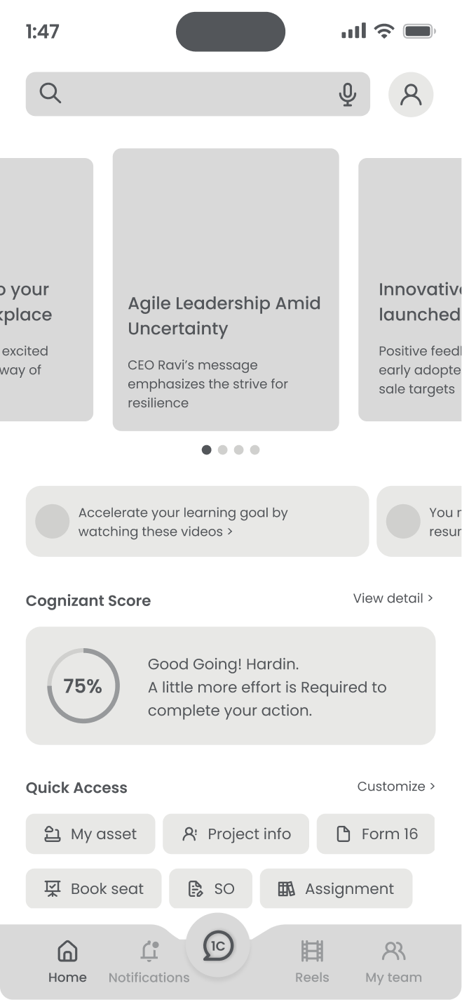
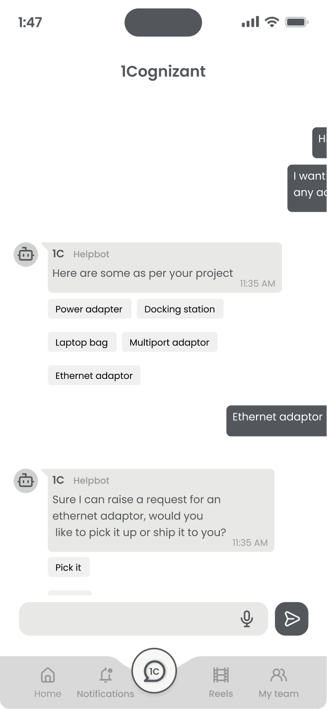
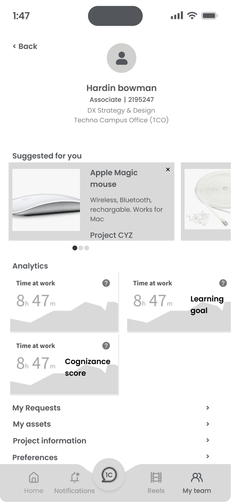
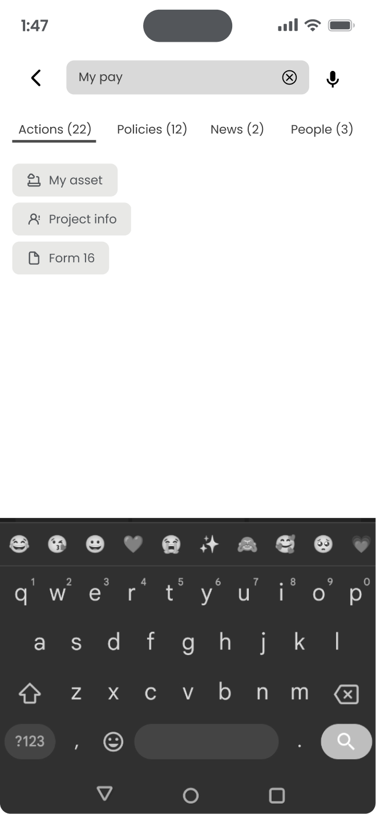
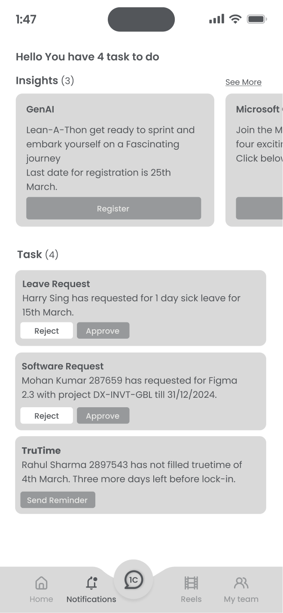
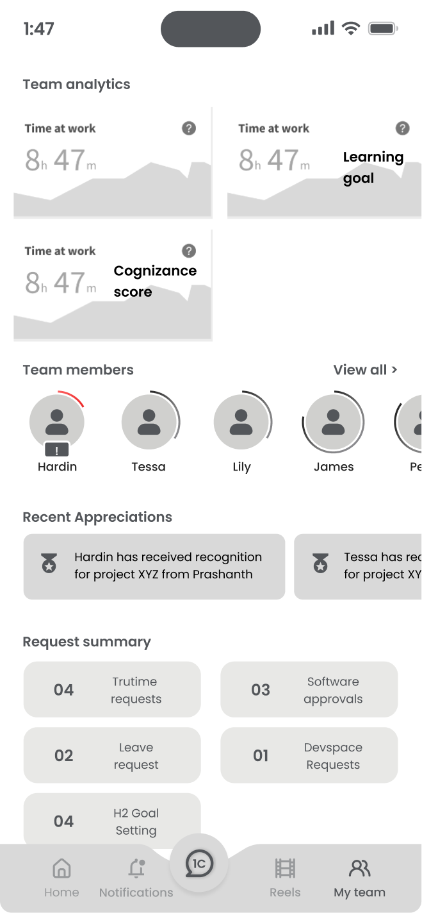
10 — Focus Group Findings
45 responses — 30 from India, 15 from other locations
Five focus groups, each followed by a quick System Usability Survey, to hear directly from the people who'd actually use this every day.
What needed work
- Onboarding support — new joiners wanted video guidance, not a document dump
- Task accessibility — critical tasks needed to be reachable with minimal scrolling
- Policy access — a proper policy depository, not a buried link
- Document sharing — simpler sharing for things like pay slips
What worked
- "The new design is a significant update, indicating real progress"
- The AI assistant was called out as a notable addition
- Minimal horizontal scrolling and a clear navigation flow
- An interface described as clear, with comprehensive integrations
11 — UI Style & Visual Design
Flat design, and an unconventional "fluid card"
Flat design
- Clean 2D elements, flat colors, no shading or false depth
- Clarity with a clean, organised layout
- Improved readability, accessibility, and load speed
Fluid card
- An unconventional card built to surface what's urgent, fast
- Icons and UI elements that help the eye scan status at a glance
- Flexible enough to adapt across personas and contexts
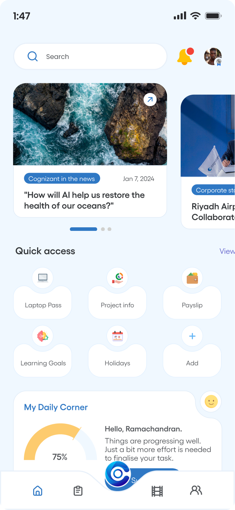
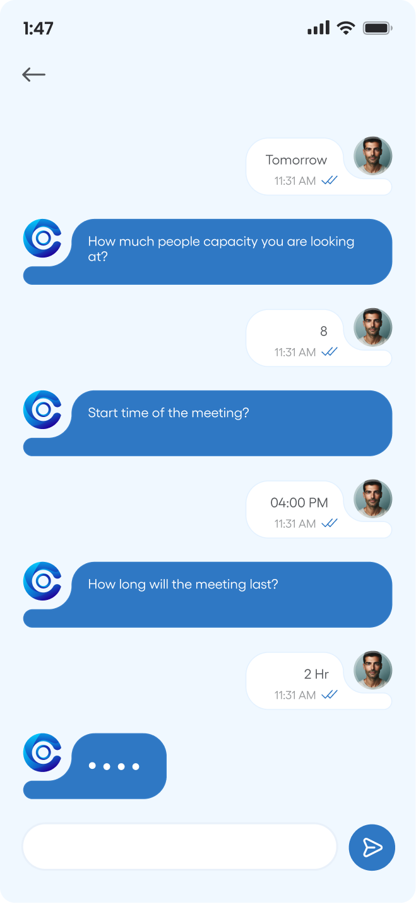
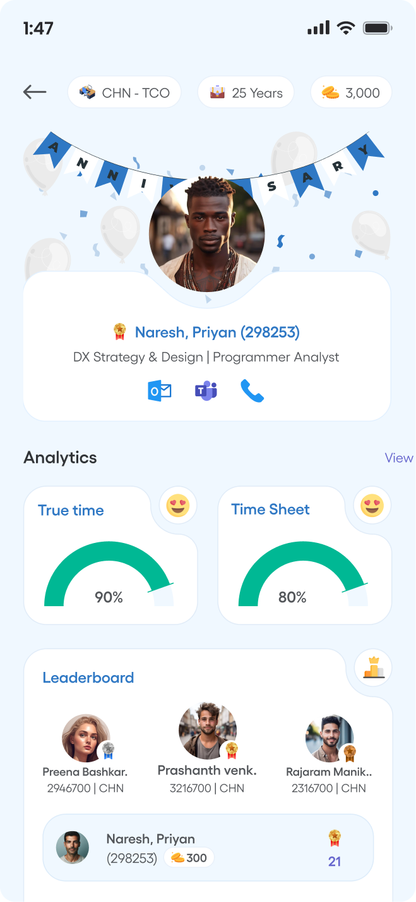
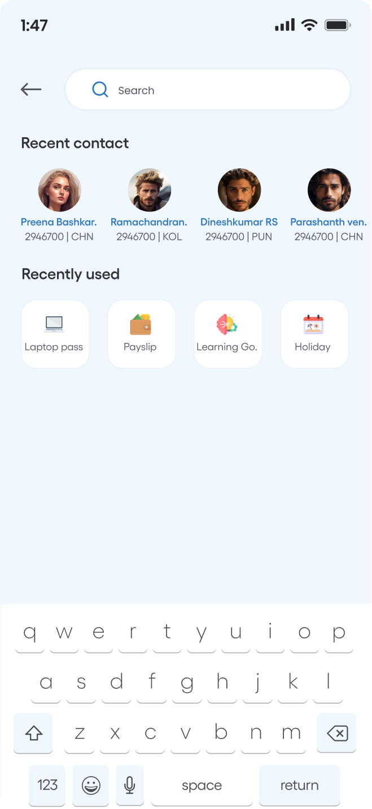
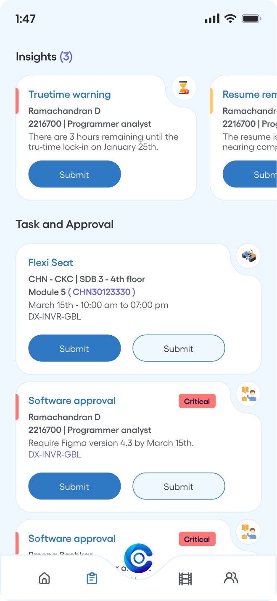
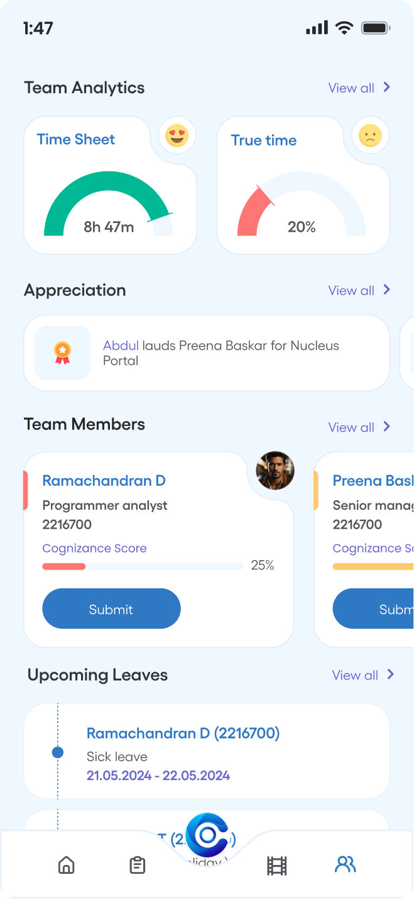
12 — Mockups
The reimagined home, desktop and mobile
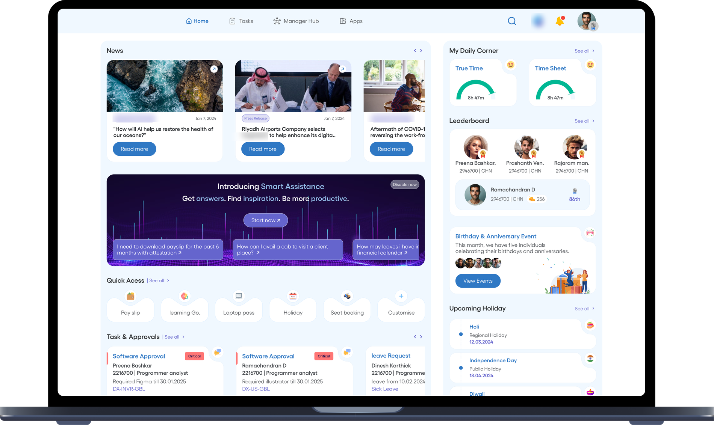
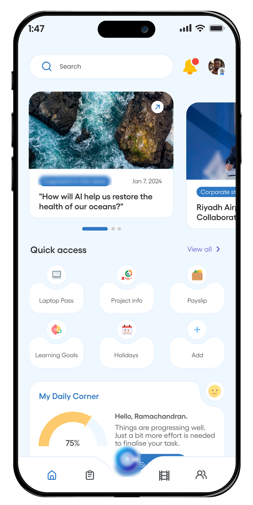
13 — Impact
Well-received by users and leadership alike
Employees responded favorably to the revamped employee center, finding it easier to locate information, complete tasks, and collaborate — a foundation the team is now extending into a full template system for every use case.
14 — Reflection
What this project reinforced for me
01
Alignment is the real bottleneck
Collaborating across stakeholders, dev, platform, and branding teams was a genuine challenge — the design work was rarely the slow part.
02
Consolidation is a UX problem
500 apps weren't a technology failure so much as an information-architecture one — the fix was rethinking what surfaces, not adding another tool.
03
Templates outlast one launch
Turning the pattern into a reusable template system for every use case is what makes an MVP rollout realistic, not just a single polished screen.
Thank you
Happy to go deeper on the research, the strategy, or any of the screens.
Reach out and I'll walk you through it.
Get in touch